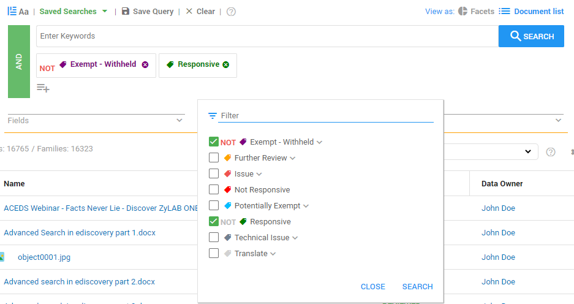
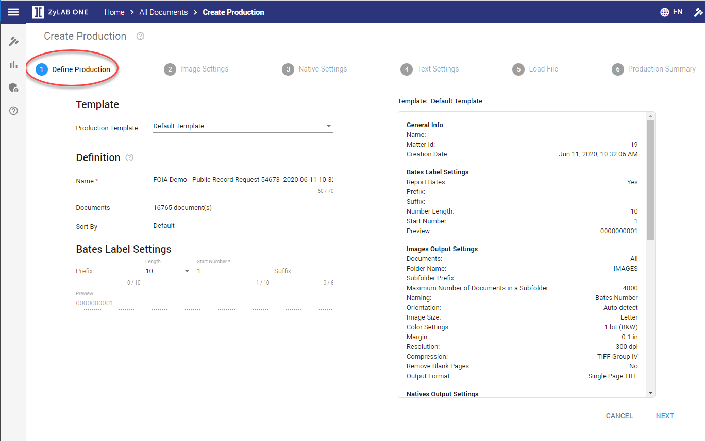
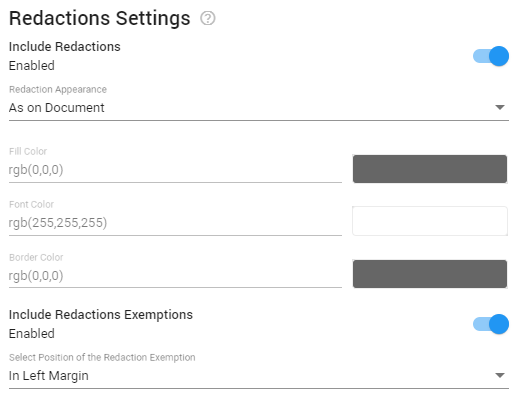
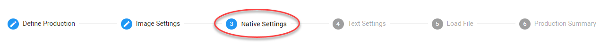
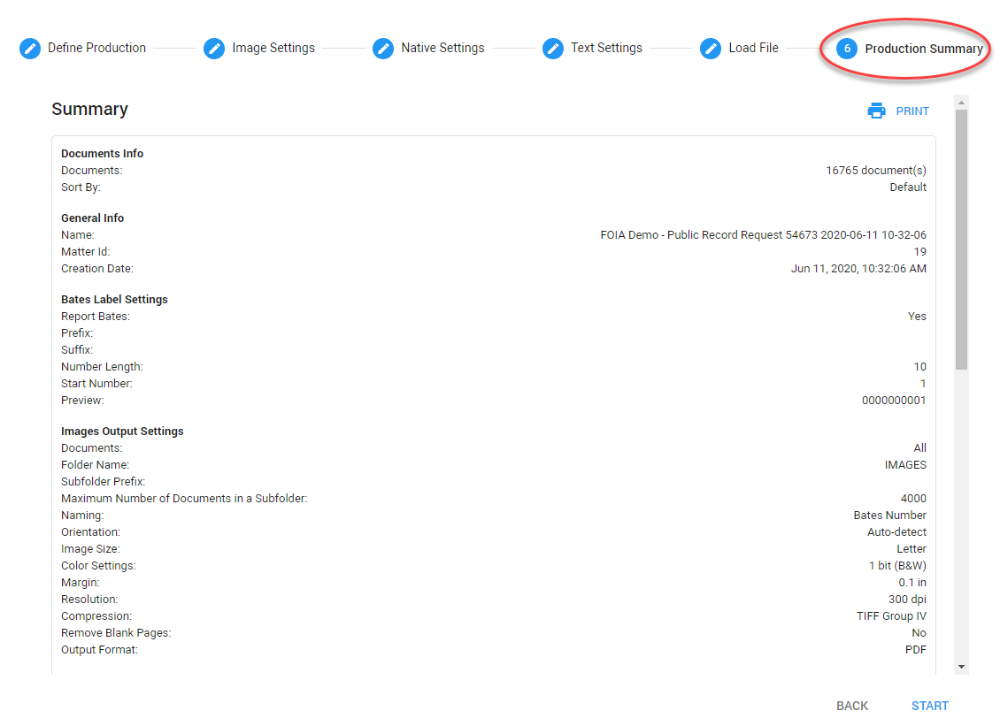
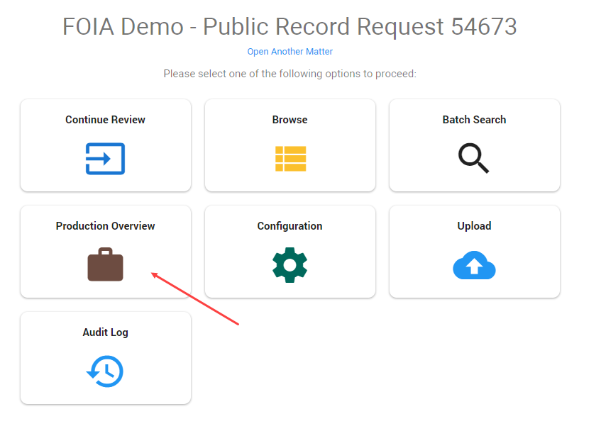
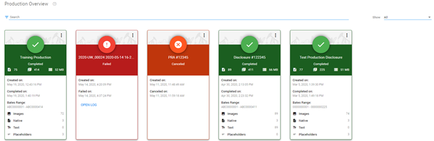

Note: The use of the term 'production' in ZyLAB ONE is synonymous with the term 'disclosure' as it relates to the public records process—see Productions.
ZyLAB ONE’s intuitive document production feature accelerates and simplifies the process of preparing documents for disclosure or production to third parties. Documents can be disclosed in a variety of formats, including pdf, native, or a combination of both to meet all your disclosure needs.
|
|
Note: The use of the term 'production' in ZyLAB ONE is synonymous with the term 'disclosure' as it relates to the public records process—see Productions. |
Watch this video to learn how to create a disclosure report:
The first step in the disclosure process is defining the set of documents to be disclosed. Although a disclosure can be based on a query or a Facet, it is common practice to create the data set based on applied tags, for example, either a custom To Be Produced tag or a series of tags such as Responsive but not Exempt Withheld. This ensures that you are disclosing exactly what is intended to be disclosed pursuant to the records request.
To create the disclosure data set, filter from the Document List View, using the tag filter option. Set the sort order for your disclosure using the filter options as shown here:

|
|
Tip: To QC your Disclosure Set, add the applicable tags to your column view and set the List Option to a Family List View to look for any inconsistencies in family tagging. |
The ZyLAB document Production Wizard will guide you through the process. The Production Wizard is launched directly from the Document List view as follows: In the Document List, select the settings icon
Then, select Productions > Create for Selection/Documents.

For more information on starting a production, see Productions.
The first step in the Production Wizard is to select a Production Template (if applicable), define the Production Name, and if applicable, define the bates numbers. Bates numbers are unique identifiers assigned to each page of a produced image of a document. They can be used for reference and retrieval once the documents are disclosed.

For more information—see Define Production.
In step two of the production wizard you can define if and how documents are produced
as images, either PDF or Tiff format.
With ZyLAB ONE’s flexible production, you can produce all, none or some documents in image format. A common practice is to produce documents such as email and word documents in PDF format, and produce spreadsheets natively.
Learn how to create multiple format productions:

There are multiple options to configure from the Image Setting tab:


Redactions
The Redactions tab is where you will configure how the redactions you created during your review will appear on the produced image of the document. There are several options available, including the color of the applied redaction, and where the text of the redaction code will appear on the disclosed image.

| Tip: Many public records clients use the 'Transparent with Black Boarder' redaction appearance setting when they have to send redactions for approval to a 3rd party or intra-agency approval. |
Step three of the production wizard is where you define if and how documents are disclosed in their native format, the format in which they were originally created and maintained. For example, MS Word documents are saved as .doc or .docx files, MS Excel files as .xls or .xlsx files, etc.

Why produce natives?
The most important reason to produce native files is that it may be required by opposition, the courts or because it has been specifically requested by the requestor of a public records request. Spreadsheets are commonly produced natively.
As with images, you can select to produce all, some or no documents in their native format.

The Naming section configures how the output native file will be named. Define how you want to name your natives. Because native files cannot be directly Bates stamped, most users will incorporate the bates number in the name of the produced/disclosed file.
|
|
Tip: Redacted documents will not be produced as natives or text. They can only be produced as images. |
Step four of the production wizard is where you define if and how documents are produced as text.

Searchable text files are likely to be produced in combination with related image files, since images (other than searchable PDFs) are not searchable.
It is not common to produce text files in public records as most disclose records as PDFs and/or natively.
For more information—see Text Settings.
Step five of the production wizard is where you can create a load file or metadata report related to the documents being disclosed. A load file acts as an index and reference to the document which can used by the receiving party to import the produced data into their own database so that the documents may be viewed, searched and filtered.

While ZyLAB ONE offers several industry standard load file formats, the most commonly used format for public records is a CSV (comma-separated values) file.
Select one or more load file formats.

Though the Settings of a load file can be adjusted, it is recommended to keep the default settings.
For more information— see Load File.
The final step of the production wizard is the Production Summary page.
This page provides a summary of all the selected production settings for final review and
is where the production will be started by clicking Start.

All created productions/disclosures can be viewed and managed from the Production Overview page. You will automatically be directed to this page when you start a production. You can also access it from the Matter Home screen. It is from this page that you can download a copy of the disclosed documents to be delivered to the requestor.

Each disclosure is represented by a Production Card. If there are many productions, use the search field to search for a specific production. Or filter to show only a subset of all productions.


Download
Download the entire production, including all related files. Once downloaded, the Zip file can be transferred to your organizations public disclosure portal or delivered directly to the requestor.
Load Files
Download or Edit the load files, if applicable.
Show Location
Show (and copy the link to) the location of where the production is being stored and can be accessed by the ZyLAB System Administrator.
Reuse Settings
Reuse the settings of this disclosure to create a new one.
Delete
Delete the production.
For a completed production, you can choose to delete All related files. Or delete Output Only; This deletes the produced files but keeps the production bates numbers available on the documents (which shows that they were part of this production).
For more information—see Production Overview.